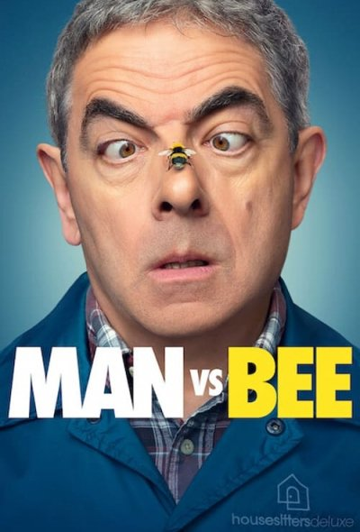
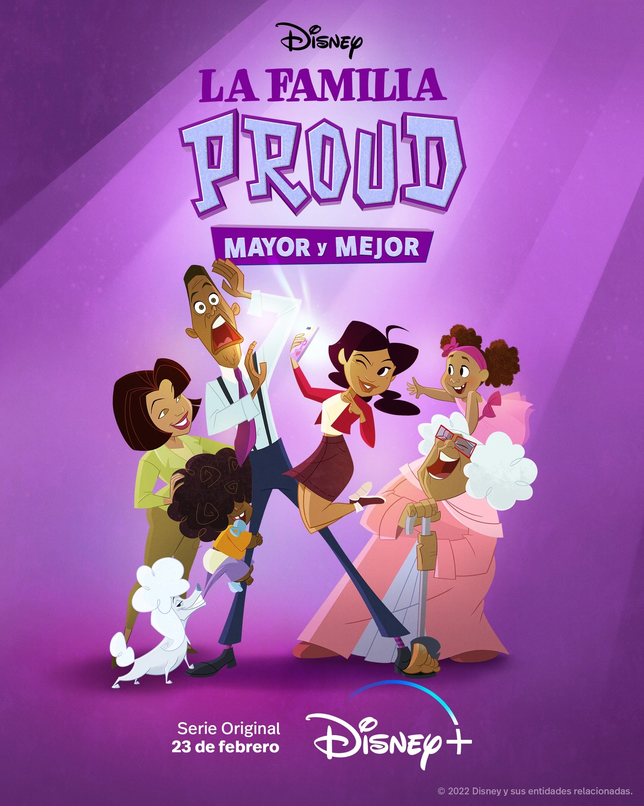

Hombre vs
Abeja Género:Comedia, Familiar
Abeja
En esta serie de comedia, el torpe Trevor se enfrenta a una abeja muy astuta mientras cuida una elegante mansión, pero solo logra causar estragos.
Audio: Latino
Creador:Rowan Atkinson Elenco: Rowan Atkinson
Género:Comedia, Familiar
8/10


She Hulk
2022 Director: Jessica Gao, Jack Kirby, John Buscena
Género: Accion, Drama, Comedia
2022
Jennifer Walters tiene una vida complicada como abogada soltera y tambien resulta ser un armatoste superpoderoso verde.
Audio: Latino
Director: Jessica Gao, Jack Kirby, John Buscena
Elenco: Tatiana Maslany, Jameela Jamil, Ginger Gonzaga, Mark Ruffalo, Tim Roth
Género: Accion, Drama, Comedia
calificacion: 5/10



La Familia
Proud 2022 Director: Ralph Farkuhar, Bruce W. Smith
Género: Comedia, Familiar, Infantil
Proud 2022
Penny Proud crece en una familia extrovertida y ruidosa con un padre demasiado protector y una madre cariñosa.
Audio: Latino
Director: Ralph Farkuhar, Bruce W. Smith
Elenco: Kyla Pratt, Keke Palmer, Asante Blackk, Tommy Davidson
Género: Comedia, Familiar, Infantil
calificacion: 6.5/10


Sex Education
2019 Director: Laurie Nunn
Género: Drama, Comedia
2019
Otis siempre tiene una respuesta respecto al sexo. Otis se une a su amiga Maeve para abrir una clinica de terapia sexual en la escuela.
Audio: Latino
Director: Laurie Nunn
Elenco: Asa Butterfield, Emma Mackey, Nsuty Gatwa, Gillian Anderson
Género: Drama, Comedia
calificacion: 9/10


Lupin
2021 Género: Thriller, Accion, Comedia
2021
Basada en la historia de Arsene Lupin, el ladron Assane Diop se propone vengar a su padre de las injusticias sufridas por parte de una familia adinerada.
Audio: Latino
Director: Marcela Said, Ludovic Bernard, Louis Leterrier, Hugo Gelin Elenco: Omar Sy, Shirine Boutella, Soufiane Guerrab
Género: Thriller, Accion, Comedia
4.7/5


El Bebe
2022 Director: Lucy Gaymer, Sian Robins-Grace
Género: Comedia, Terror
2022
La vida de una joven se convierte en un terrorifico espectaculo surrealista cuando acaba inesperadamente con un bebe, del cual intenta deshacerse hasta que descubre su verdadera e inquietante naturaleza.
Audio: Latino
Director: Lucy Gaymer, Sian Robins-Grace
Elenco: Michalle de Swarte, Amira Ghazalla, Tanya Reynolds, Ambar Grappy
Género: Comedia, Terror
calificacion: 3.3/5

Sky Rojo
2021 Director: Alex Pino, Esther Martinez Lobato
Género: Drama, Accion, Comedia, Thriller
2021
Tres prostitutas, una cubana, una argentina y una española, deciden uir de su proxeneta. Tras haber cometido varios delitos, las jovenes no pueden acudir a la policia en busca de ayuda.
Audio: Latino
Director: Alex Pino, Esther Martinez Lobato
Elenco: Lali Esposito, Miguel Angel Silvestre, Veronica Sanchez, Yany Prado
Género: Drama, Accion, Comedia, Thriller
calificacion: 3.5/5


Cobra Kai
2018 Director: Jon Hurwitz, Josh Heald, Hayden Schlossberg
Género: Comedia, Drama,
2018
Treinta y cuatro años despues de los eventos del torneo de karate All Valley de 1984, Johnny Lawrence busca la redencion al abrir un dojo Cobra Kai, reavivando su rivalidad con un exitoso Daniel LaRusso.
Audio: Latino
Director: Jon Hurwitz, Josh Heald, Hayden Schlossberg
Elenco: Ralph Macchio, William Zabka, Xolo Maridueña, Peyton List, Jacob Bertrand
Género: Comedia, Drama,
calificacion: 4.9/5


The Umbrella Academy
2019 Director: Gerard Way
Género: Accion, Drama, Ciencia Ficcion,Comedia
2019
Una familia disfuncional de superheroes se reune para resolver el misterio de la muerte de su padre y la amenaza del apocalipsis.
Audio: Latino
Director: Gerard Way
Elenco: Aidan Gallagher, Elliot Page, Robert Sheehan
Género: Accion, Drama, Ciencia Ficcion,Comedia
calificacion: 4.9/5


Las Aventuras de Scrat
2022 Director: Chris Wedge
Género: Familiar, Comedia, Infantil
2022